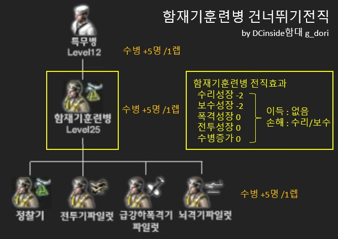

네이비필드 연구실 / 함재기훈련병 건너뛰기
함재기훈련병 건너뛰기전직
적용대상 : 전투기/급강하폭격기/뇌격기/(수리)정찰기

함재기훈련병 전직
함재 성장+4
전투기/급강하폭격기/뇌격기 : 함재어빌과 관련없음
(수리)정찰기 : 함재어빌보다 수리어빌을 우선함
수리/보수 성장-2
폭격/전투/수병수 성장 변화없음
실질적으로 함재기훈련병 전직은 이득은 없고 수리/보수 손해만 있다
건너뛰기전직
① 특무병12렙 전직후 전투기/급강하폭격기/뇌격기 전직렙까지 육성
②A 전투기/급강하폭격기/뇌격기 전직렙에서 몰아서 2번 전직
②B (수리)정찰기 최대한 늦게 몰아서 전직 (개인의 선택)